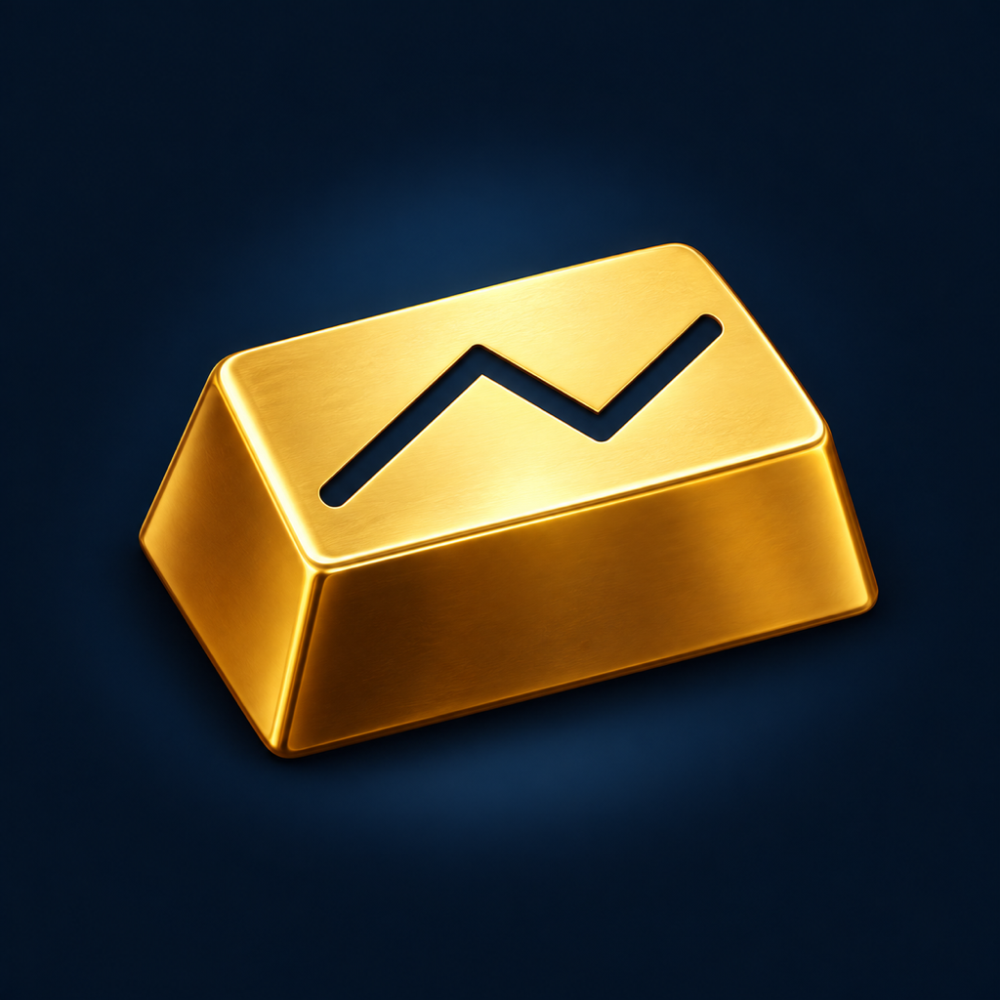

Ten timeframes. One wider view.
Move from one-minute charts to the yearly trend. Compare multi-timeframe consensus with EMA, RSI, MACD, ATR, ADX and volatility.
Gold research for iPhone & iPad

Aurelens brings ten chart timeframes, global event risk and your manual gold holdings into one XAU/USD research workspace.
10 Timeframes, AI & Event Risk
Move from one-minute charts to the yearly trend. Compare multi-timeframe consensus with EMA, RSI, MACD, ATR, ADX and volatility.
Review recent, upcoming and continuing global risks, gold news with source links, and two-day or one-week probability estimates.
After your consent, ask OpenAI, DeepSeek or GLM about current analysis and necessary summaries of manually recorded holdings. Requires your own API key; provider charges may apply.
Version 0.6.3 (build 18) is in developer testing. Public installation is not yet available; TestFlight or App Store access will be announced when ready.
The app interface supports English and Simplified Chinese.
Preview and undo holding edits, and review reference profit or loss in USD or CNY. Holdings and settings are stored locally; API keys use Keychain.
Need help with Aurelens? Visit our support page for issue reporting and privacy requests.
For market research and education. Data, probabilities and AI output may be delayed, incomplete or inaccurate. Aurelens does not execute trades or provide investment advice.